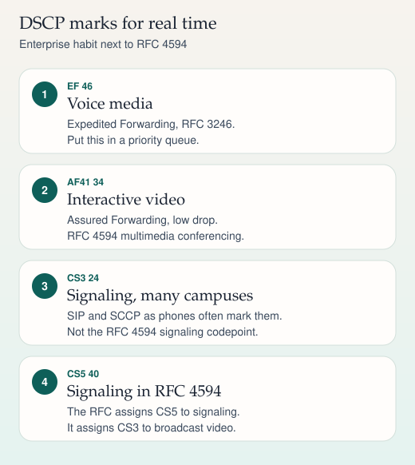

RFC 4594 and enterprise practice
QoS marks
A DSCP mark does nothing until a queue treats it as priority. EF without a priority queue is a label.
- RTP EF — Voice RTP is commonly marked EF, DSCP 46. Confirm the cluster service parameter.
- SIP CS3 — Many Cisco designs mark signaling CS3. RFC 4594 assigns signaling to CS5 and CS3 to broadcast video.
- Queue — Trust the mark only from ports that should be trusted. Then give EF a priority queue.
Do not copy RFC 4594 code points over a Cisco collaboration plan, or the reverse, without reading both. G.114's planning conversation is about one-way delay around 150 ms. It is not a license to add a deep jitter buffer.
G.711 at 20 ms is 80 kbit/s at layer 3: (160 bytes of payload + 40 bytes of IP, UDP, and RTP) × 8 × 50 packets. An 18-byte Ethernet header makes 87.2 kbit/s. The codec lab on the labs page uses that formula.
Sources
Study card carried forward
RFC 4594
QoS and DSCP
Mark voice media EF, interactive video AF41, and be explicit about signaling. RFC 4594 and many Cisco campus designs do not use the same codepoint for signaling. This card puts both on one page.

On a phone, swipe a wide ladder sideways. The steps below repeat the same sequence.
The six-bit field
Differentiated services uses the six-bit DSCP in the IP header (RFC 2474). The other two bits of the old TOS octet are ECN (RFC 3168), not part of the per-hop behavior name. A mark does nothing by itself. A hop has to map that mark to a queue, a rate, and a drop policy.
Marks you will actually see
| Traffic | Name | Decimal | Where this comes from |
|---|---|---|---|
| Voice media | EF | 46 | Expedited Forwarding, RFC 3246. RFC 4594 assigns EF to the Telephony service class. Cisco phones mark RTP this way. |
| Interactive video | AF41 | 34 | Assured Forwarding class 4, low drop (RFC 2597). RFC 4594 uses AF41 for multimedia conferencing. Cisco video endpoints commonly mark this way. |
| Call signaling, many Cisco designs | CS3 | 24 | What a lot of campus designs and phone trust boundaries still use for SIP and SCCP. |
| Signaling, RFC 4594 | CS5 | 40 | RFC 4594 assigns CS5 to the Signaling service class. |
| Broadcast video, RFC 4594 | CS3 | 24 | The same codepoint many Cisco designs used for signaling. This is the collision. |
| Streaming video | AF31 | 26 | RFC 4594 multimedia streaming, low drop. |
| Network control | CS6 | 48 | RFC 4594 network control. Routing protocols. Do not put voice here. |
| Best effort | DF (CS0) | 0 | Unmarked traffic. |
| Low-priority / scavenger | CS1 | 8 | RFC 4594 low-priority data. Bulk traffic you are willing to drop first. |
AF drop precedence, in one sentence: AF41, AF42, and AF43 are the same class (34, 36, and 38) with a rising chance of drop. The same pattern holds for AF3x, AF2x, and AF1x. Voice does not use AF. Voice uses EF, and EF is only meaningful if the queue is small and admission-controlled. A link full of EF is just a congested link with a fancy mark.
Queuing, not calligraphy
Put EF in a priority queue (low-latency queue). Give AF video its own bandwidth and do not let it borrow the priority queue. Signaling is lightweight; it needs protection from drops more than it needs a large reservation. A common design guideline is to cap the priority queue well below the link rate so voice cannot starve everything else. The "one third of the link" figure you may have memorized is a design guideline, not an RFC.
Trust the mark at the access edge, where you know the device. A Cisco phone can mark its voice as EF and re-mark the attached PC. An untrusted switch port should not honor whatever DSCP a laptop felt like writing. Re-mark at the boundary between a network that uses CS3 for signaling and a network that follows RFC 4594 with CS5. Consistency inside one network matters more than which of the two conventions you pick.
Capacity sketch
These are Ethernet planning estimates for 20 ms packetization, including RTP, UDP, IP, and a typical Ethernet header. They are not the codec payload rates (64 kbit/s and 8 kbit/s).
- G.711: about 87 kbit/s per call.
- G.729: about 31 kbit/s per call.
Layer-2 markings such as 802.1p CoS are a different three-bit field. CoS 5 is often mapped to voice on a trunk. CoS is not DSCP. Write the map down at the boundary.
Sources
- RFC 2474, definition of the differentiated services field
- RFC 2597, Assured Forwarding PHB group
- RFC 3246, Expedited Forwarding PHB
- RFC 4594, configuration guidelines for DiffServ service classes
- RFC 3168, ECN, so you do not treat those two bits as part of the DSCP
- Cisco campus QoS design guides, for the CS3 signaling convention and trust boundaries